1.1 Algorithmic design
We can define algorithmic design as a design method where the output is achieved through well-defined steps. In that sense, many human activities are algorithmic. Take, for example, baking a cake. You get the cake (output) by using a recipe (well-defined steps). Any change in the ingredients (input) or the baking process results in a different cake. We will analyze the parts of typical algorithms, and identify a strategy to build algorithmic solutions from scratch.
Regardless of its complexity, all algorithmic solutions have 3 building blocks: input, key process, and output. Note that the key process may require additional input and processes.
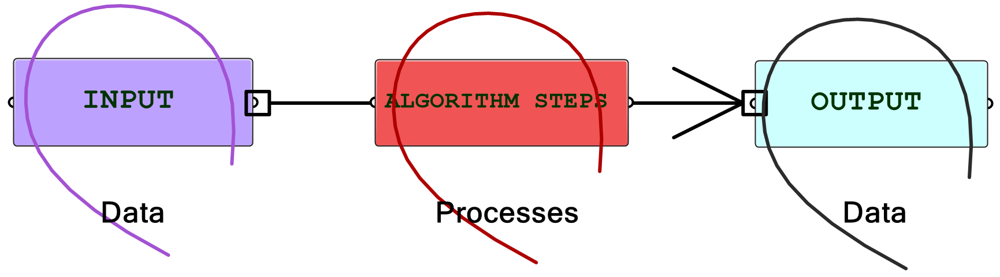
Throughout this text, we will organize and label the solutions to identify the three blocks clearly. We will also use consistent color coding to visually distinguish between the parts. This will help us become more comfortable with reading algorithms and quickly identify input, key processing steps, and properly collect and display output. Visual cues are important to develop fluency in algorithmic thinking.
In general, reading existing algorithmic solutions is relatively easy, but building new ones from scratch is much harder and requires a new set of skills. While it is useful to know how to read and modify existing solutions, it is essential to develop algorithmic design skills to build new solutions from scratch.
1.2 Algorithms parts
In Grasshopper, a solution flows from left to right. At the far left are input values and parameters, and the far right has the output. In between are one or more key processes, and sometimes additional input and output. Let’s take a simple example to help identify the three parts of any algorithm (input, key process, output). The simple addition algorithm includes two numbers (input), the sum (output) and one key process that takes the numbers and gives the result. We will use purple for the input, maroon for the key processes and light blue for the output. We will also group and label the different parts and adhere to organizing the Grasshopper solutions from left to right.
Example 1-2-1: Algorithm to add 2 numbers
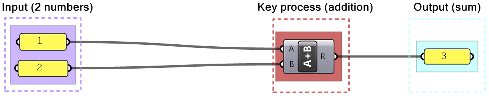
Algorithms may involve intermediate processes. For example, suppose we need to create a circle (output) using a center and a radius (input). Notice that the input is not sufficient because we do not know the plane on which the circle should be created. In this case, we need to generate additional information, namely the plane of the circle. We will call this an intermediate process and use brown color to label it.
Example 1-2-2: Algorithm to create a circle on the XY-Plane from a center and a radius
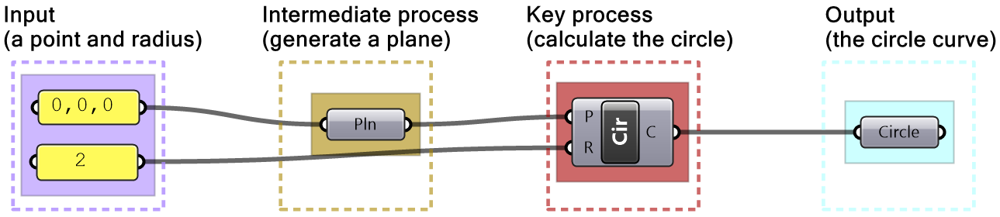
Some solutions are not written with styles and hence are hard to read and build on. It is very important that you take the time to organize and label your solutions to make them easier to understand, debug and use by others.
| Tutorial 1-2-3: Read existing algorithm |
|---|
|
Given the following definition, write a description of what the algorithm does, identify input, the main process(s) and output, then label and color-code all the parts. Re-write the solution to make it more readable.
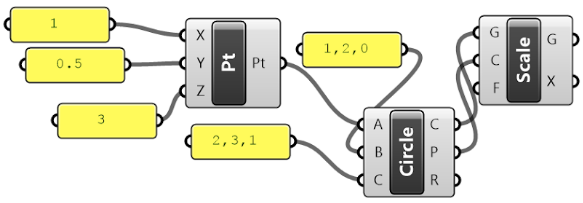 |
Solution...In order to figure out what the algorithm is meant to do, we need to group the input on the left side, and collect the output on the right side, then organize the processes in the order of execution. We then step through the solution from left to right to deduce what it does. We can examine and preview the output in each step. The example of the tutorial is meant to create a circle that is twice as large as another circle that goes through three given points. One of the points is constructed out of its 3 coordinates. 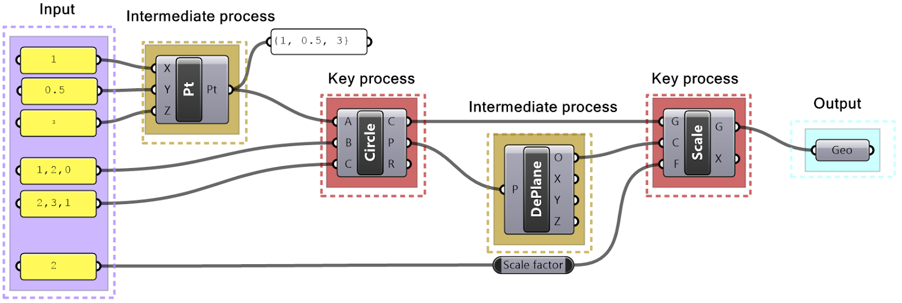 |
1.3 Designing algorithms: the 4-step process
Modeling in Rhino vs Grasshopper
The 4-step process to designing algorithms
Before we generalize a method to design algorithms, let’s examine an algorithm we commonly use in real life such as baking a cake. If you already have a recipe for a cake, you simply get the recommended ingredients, mix them, pour in a pan, put in a preheated oven for a certain amount of time, then serve. If the recipe is well documented, then it is relatively straightforward to use. As you become more proficient in baking cakes, you may start to modify the recipe. Perhaps add new ingredients (chocolate or nuts) or use different tools (cupcake container).
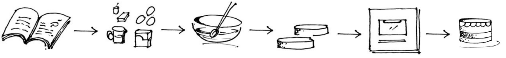
When designers write algorithms, they typically try to search for existing solutions and modify them to fit their purposes. While this is a good entry point, using existing solutions can be frustrating and time-consuming. Also, existing solutions have their own flavor and that may influence design decisions and limit creativity. If designers have unique problems, and they often do, they have no choice but to create new solutions from scratch; albeit a much harder endeavor.
Back to our example, the task of baking a cake is much harder if you don’t have a recipe to follow and have not baked one before. You will have to guess the ingredients and the process. You will likely end up with bad results in the first few attempts, until you figure it out! In general, when you create a new recipe, you have to follow the process in reverse. You start with an image of the desired cake, you then guess the ingredients, tools and steps. Your thinking goes along the following lines:
- The cake needs to be baked, so I need an oven and time,
- What goes in the oven is a cake batter held by a container,
- The batter is a mix of ingredients
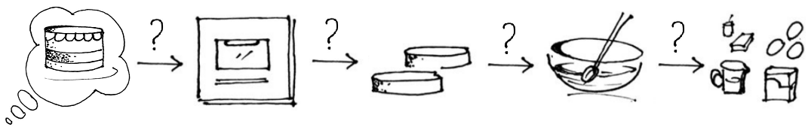
We can use a similar methodology to design parametric algorithms from scratch. Keep in mind that creating new algorithms is a “skill” and it requires patience, practice and time to develop.
Algorithmic thinking in 3D modeling vs parametric design
3D modeling involves a certain level of algorithmic thinking, but it has many implicit steps and data. For example designing a mass model using a 3D modeler may involve the following steps:
- Think about the output (e.g. a mass out of few intersecting boxes)
- Identify a command or series of commands to achieve the output ( e.g. run Box command a few times, Move, Scale or Rotate one or more boxes, then BooleanUnion the geometry).
At that point, you are done!
Data such as the base point for your initial box, width, height, scale factor, move direction, rotation angle, etc. are requested by the commands, and the designer does not need to prepare ahead of time. Also, the final output (the boolean mass) becomes directly available and visible as an object in your document.
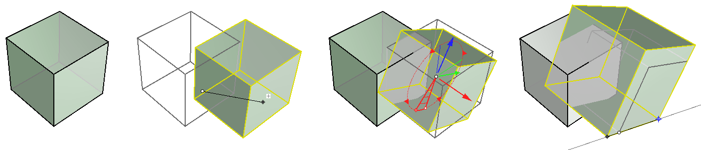
Algorithmic solutions are not interactive and require explicit articulation of data and processes. In the box example, you need to define the box orientation and dimensions. When copy, you need a vector and when rotate you need to define the plane and angle of rotation.
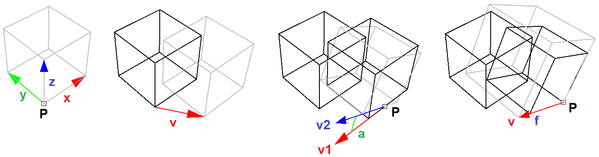
Designing algorithms
Designing algorithms requires knowledge in geometry, mathematics and programming. Knowledge in geometry and mathematics is covered in the Essential Mathematics for Computational Design. As for programming skills, it takes time and practice to build the ability to formulate design intentions into logical steps to process and manage geometric data. To help get started, it is useful to think of any algorithm as a 4-step process as in the following:
| 1. Output | Clearly identify the desired outcome |
| 2. Key processes | Identify key steps to reach the outcome |
| 3. Input | Examine initial data and parameters |
| 4. Intermediate steps | Define intermediate parameters and processes to generate additional data |
Thinking in terms of these 4 steps is key to developing the skill of algorithmic design. We will start with simple examples to illustrate the methodology, and gradually apply more complex examples.
Example 1-3-1: Add two numbers Use the 4-Step process to write an algorithm to add two numbers
| 1. Output: The sum of the 2 numbers Use the Panel component to collect the sum |
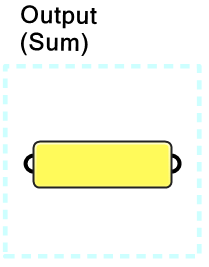 |
| 2. Key processes: Addition Use the Addition component that takes 2 numbers and gives the sum |
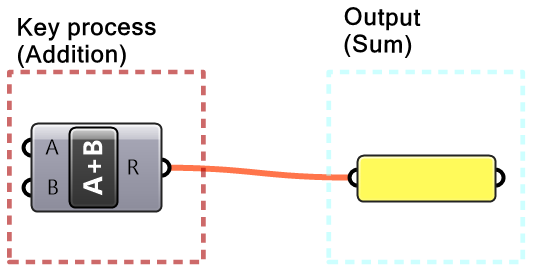 |
| 3. Input: 2 numbers Use the Panel component to hold and view the values of input numbers |
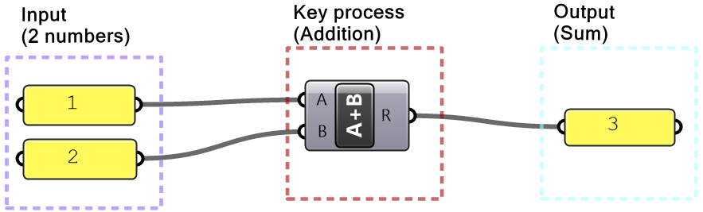 |
Example 1-3-2: Create a circle Use the 4-Step process to create a circle from a given center and radius
| 1. Output: A Circle Use the Circle parameter to collect the output |
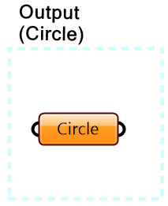 |
| 2. Key processes: Identify a key process that generates a circle from a radius Use the Circle component in Grasshopper |
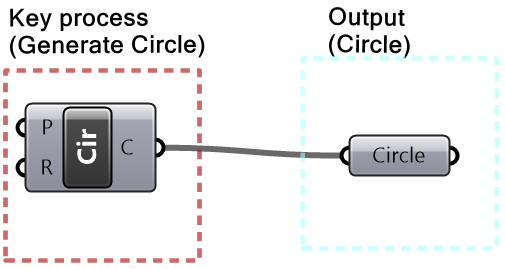 |
| 3. Input: Use the given input (center and radius). Feed the radius to the Circle component |
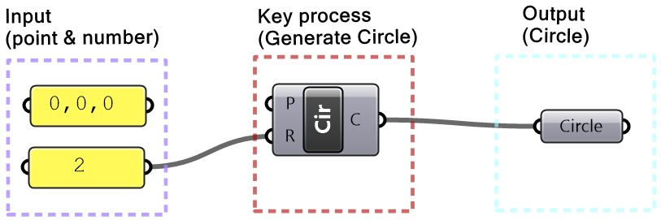 |
| 4. Intermediate process: The circle needs a center, and also the plane on which the circle is located. Let's assume the circle is on a plane parallel to the XY-Plane and use the circle center as the origin of the plane |
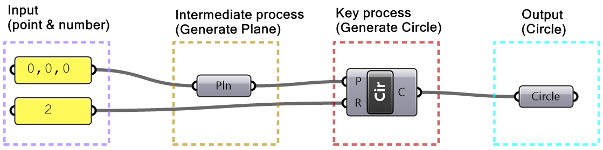 |
Example 1-3-3: Create a line Use the 4-Step process to create an algorithm to generate a line from 2 points. One point is referenced from Rhino, and the other is created using three coordinates (x=1, y=0.5 and z=3)
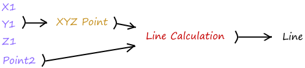
| 1. Output: The line geometry. Use the Geometry parameter to collect the output |
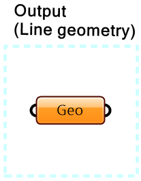 |
| 2. Key processes: Identify a key process that generates a line from 2 points. Use the Line component in Grasshopper |
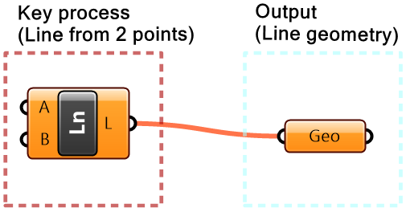 |
| 3. Input: Use the given input (a referenced point and 3 coordinates). Feed one point to one of the ends of the line |
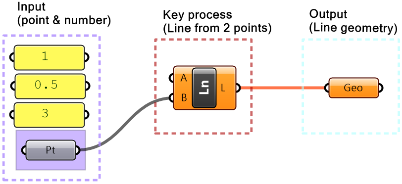 |
| 4. Intermediate process: Before we can use the coordinates as a point, we need to construct a point |
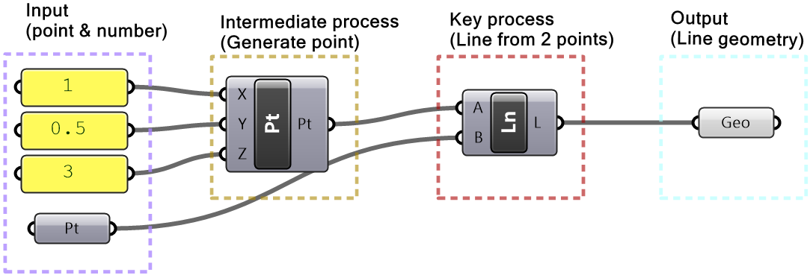 |
In more complex algorithms, we will need to analyze the problems, investigate possible solutions and break them down to pieces whenever possible to make it more manageable and readable. We will continue to use the 4-step process and other techniques to solve more complex algorithms throughout the book.
1.4 Data
Data is information stored in a computer and processed by a program. Data can be collected from different sources, it has many types and is stored in well defined structures so that it can be used efficiently. While there are commonalities when it comes to data across all scripting languages, there are also some differences. This book explores data and data structures specific to Grasshopper.
1.5 Data sources
In Grasshopper, there are three main ways to supply data to processes (or what is called components): internal, referenced and external.
| Data sources in Grasshopper |
|---|
|
1. Internally set data Data can be set inside any instance of a parameter. Once set, it remains constant, unless manually changed or overridden by external input. This is a good way when you do not |
|
2. Referenced data Data can be referenced from Rhino or some external document. For example, you can reference a point created in a Rhino document. When you move the point in Rhino, its reference in Grasshopper updates as well. Grasshopper files are saved separately from Rhino files, and hence if the GH file has referenced data, the Rhino file needs to be saved and passed along with the GH file to avoid any loss of data 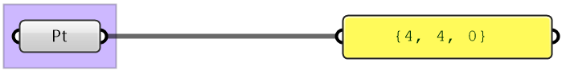 generally need to change the data after it is set (constant). Data is stored inside the GH file 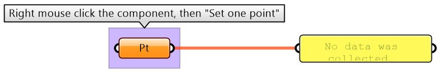 |
|
3. Externally supplied data Data can be supplied from previous processes. This method is best suited for dynamic data or data controlled parametrically. Externally supplied data to a parameter takes precedent over the internal or referenced values (when both exist) 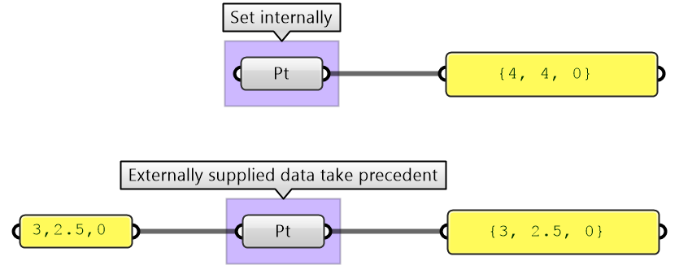 |
1.6 Data types
All programming languages identify the kind of data used in terms of the values that can be assigned to and the operations and processes it can participate in. There are common data types such as Integer, Number, Text, Boolean (Boolean type can be set to True or False), and others. Grasshopper lists those under the Params > Primitives tab.
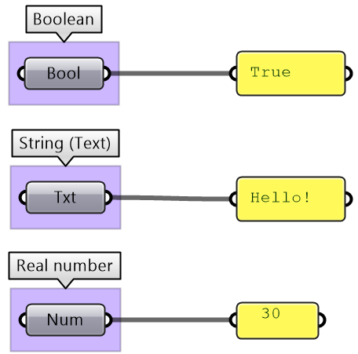
Grasshopper supports geometry types that are useful in the context of 3D modeling such as Point (3 numbers for coordinates), Line (2 points), NURBS Curve, NURBS Surface, Brep, and others. All geometry types are included under the Params> Geometry tab in GH.
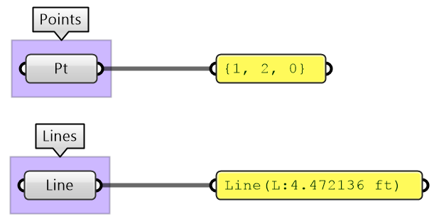
There are other mathematics types that designers do not usually use in 3D modeling, but are very common in parametric design such as Domains, Vectors, Planes, and Transformation Matrices. GH provides a rich set of tools to help create, analyze and use these types. To fully understand the mathematical as well as geometry types such as NURBS curves and surfaces, you can refer to the Essential Mathematics for Computational Design book by the author
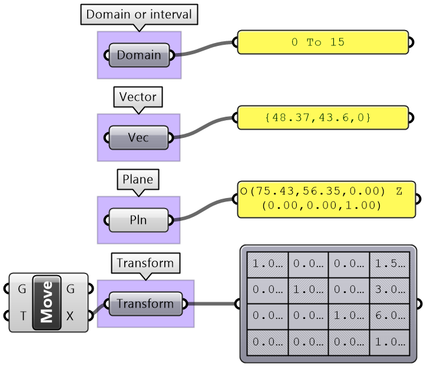
The parameters in GH can be used to convert data from one type to another (cast). For example if you need to turn a text into a number, you can feed your text into a Number parameter. If the text cannot be converted, you’ll get an error.
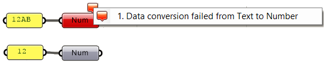
Grasshopper components internally convert input to suitable types when possible. For example, if you feed a “text” to Addition component, GH tries to read the text as a number. If a component can process more than one type, it uses the input type without conversion. For example, equality in an expression can compare text as well as numbers. In such case, make sure you use the intended type to avoid confusion.
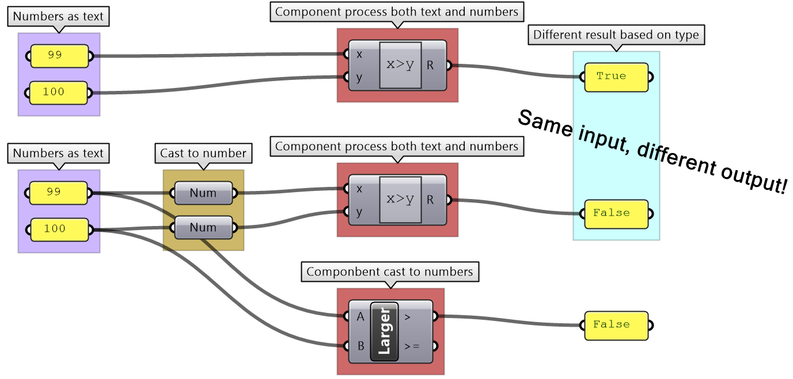
It is worth noting that sometimes GH components simply ignore invalid input (null or wrong type). In such cases, you are likely to end up with an unexpected result and it will be hard to find the bug. It is very important to verify the output from each component before using it.
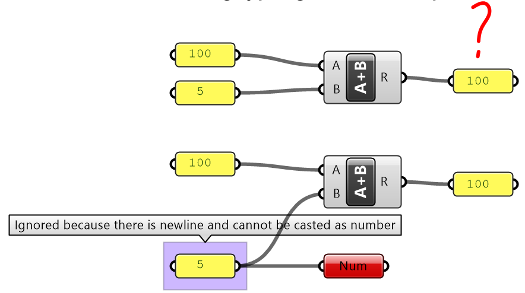
1.7 Processing Data
Algorithmic designs use many data operations and processes. In the context of this book, we will focus on five categories: numeric and logical operations, analysis, sorting and selection.
1.7.1 Numeric operations
Numeric operations in Grasshopper
Numeric operations include operations such as arithmetic, trigonometry, polynomials and complex numbers. GH has a rich set of numeric operations, and they are mostly found under the Math tab. There are two main ways to perform operations in GH. First by using designated components for specific operations such as Addition, Subtraction and Multiplication.
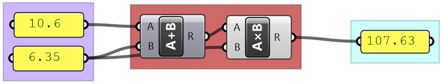
Second, use an Expression component where you can combine multiple operations and perform a rich set of math and trigonometry operations, all in one expression.
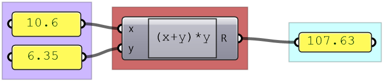
The Expression component is more robust and readable when you have multiple operations.
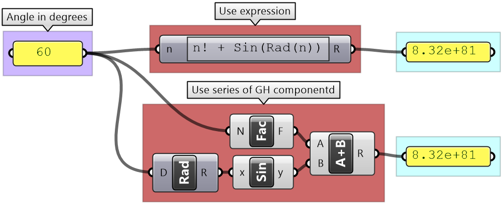
Input to Expressions can be treated as text depending on the context.
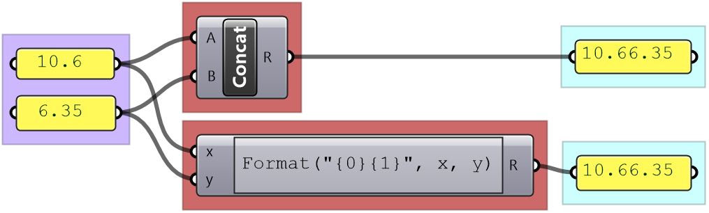
It is worth mentioning that most numeric input to components allow writing an expression to modify the inputs inline. For example, the Range component has N (number of steps) input. If you right mouse click on “N”, you can set an expression. You always use “x” to represent the supplied input regardless of the name.
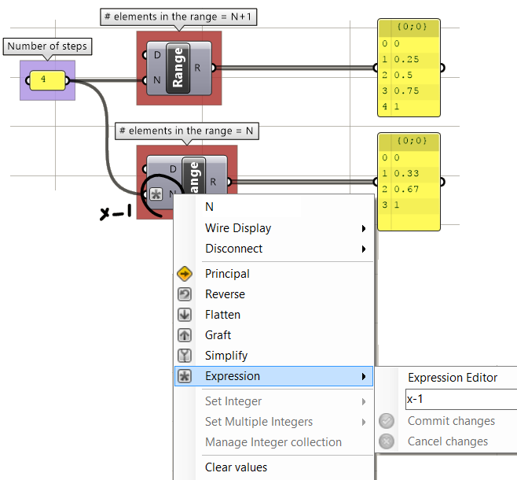
1.7.2 Logical operations
Logical operations in Grasshopper
Main logical operations in GH include equalities, sets and logic gates.
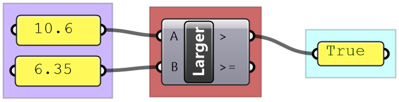
Logical operations are used to create conditional flow of data. For example, if you like to draw a sphere only when the radius is between two values, then you need to create a logic that blocks the radius when it is not within your limits.
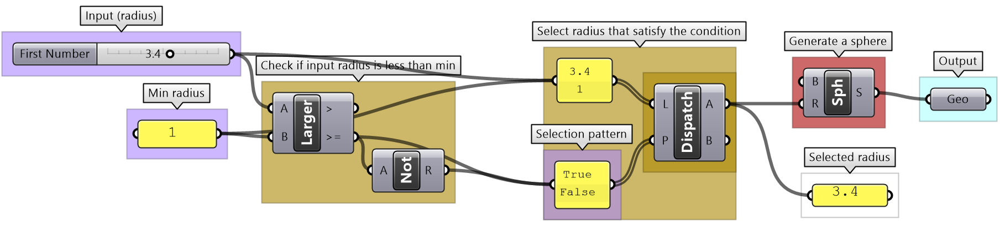
1.7.3 Data analysis
There are many tools in GH to examine and preview data. Panel is used to show the full details of the data and its structure, while the Parameter Viewer shows the data structure only. Other analysis components include Quick Graph that plots data in a graph, and Bounds to find the limits in a given set of numbers (the min and max values in the set).
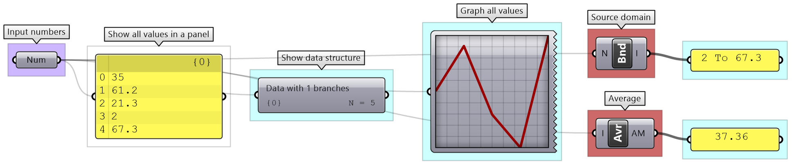
1.7.4 Data Sorting
GH has designated components to sort numeric and geometry data. The Sort List component can sort a list of numeric keys. It can sort a list of numbers in ascending order or reverse the order. You can also use the Sort List component to sort geometry by some numeric keys, for example sort curves by length. GH has components designated to sort geometry sets such as Sort Points to sort points by their coordinates.
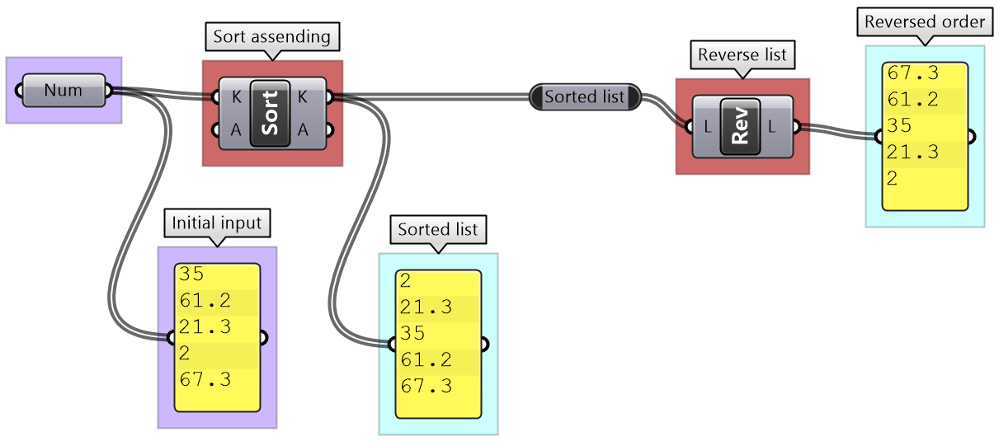
1.7.5 Data Selection
3D modeling allows picking specific or a group of objects interactively, but this is not possible in algorithmic design. Data is selected in GH based on the location within the data structure, or by a selection pattern. For example List Item component allows selecting elements based on their indices.
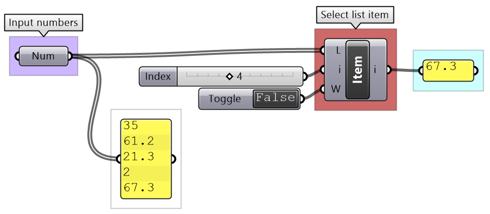
The Cull Pattern component allows using some repeated patterns to select a subset of the data.
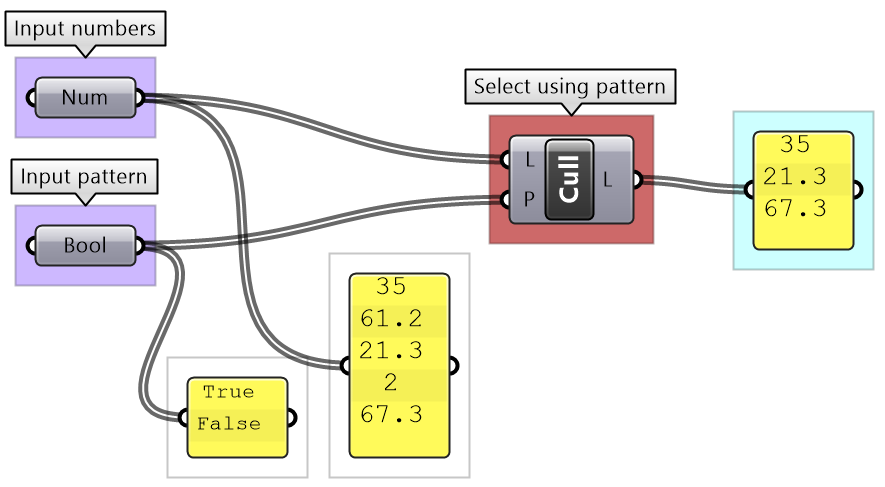
As you can see from the examples, selecting specific items or using cull components yield a subset of the data, and the rest is thrown away. Many times you only need to isolate a subset to operate on, then recombine back with the original set. This is possible in GH, but involves more advanced operations. We will get into the details of these operations when we talk about advanced data structures in chapter 3.
1.7.6 Mapping
That refers to the linear mapping of a range of numbers where each number in a set is mapped to exactly one value in the new set. GH has a component to perform linear mapping called ReMap. You can use it to scale a set of numbers from its original range to a new one. This is useful to scale your range to a domain that suits your algorithm’s needs and limitations.
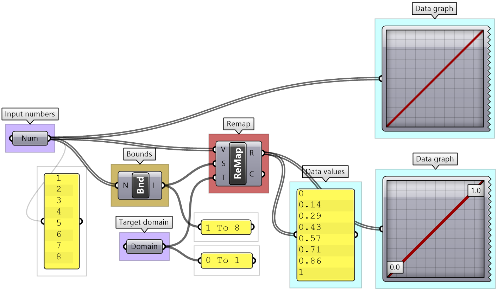
Converting data involves mapping. For example, you may need to convert an angle unit from degrees to radians ( GH components accept angles in radians only).
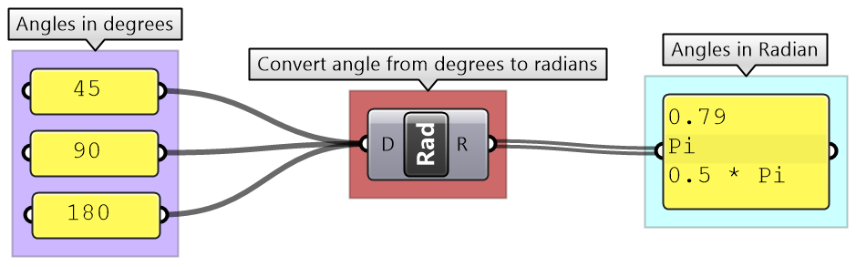
As you know, parametric curves have “domains” (the range of parameters that evaluate to points on the curve). For example, if the domain of a given curve is between 12.5 to 51.3, evaluating the curve at 12.5 gives the point at the start of the curve. Many times you need to evaluate multiple curves using consistent parameters. Reparameterizing the domain of curves to some unified range helps solve this problem. One common domain to use is “0 To 1”. At the input of each curve in any GH component, there is the option to Reparameterize which resets the domain of the curve to be “0 to 1”.
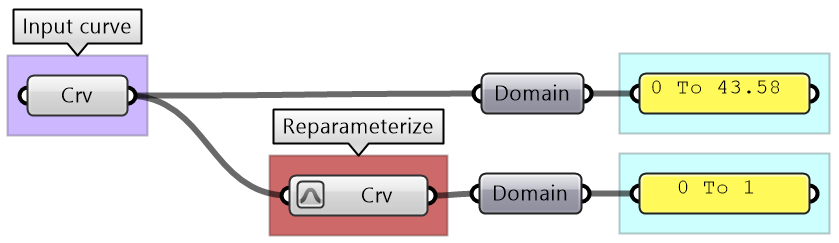
| Tutorial 1-7-A: Flow control |
|---|
|
What is the purpose of the following algorithm? Notate and color code to describe the purpose of each part.
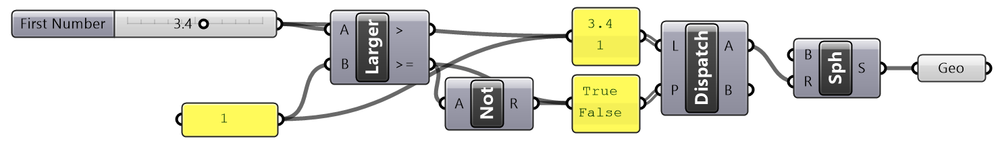 |
Solution...Analyze the algorithm The algorithm has an output that is a sphere, a radius input and some conditional logic to process the radius. 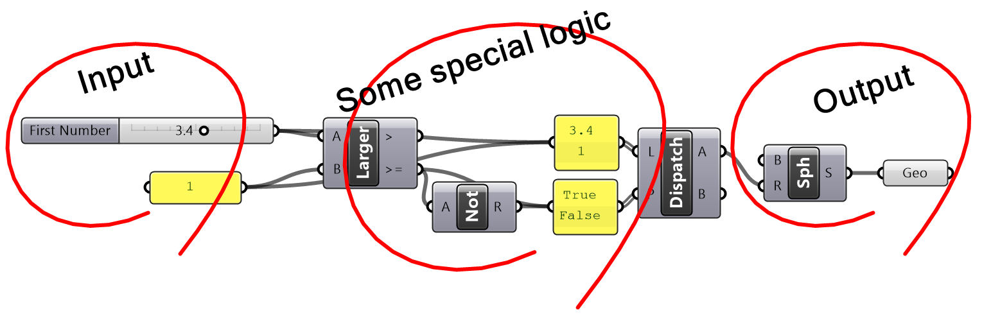 Notate and color-code the solution From testing the output and following the steps of the solution it becomes apparent that the intention is to make sure that the radius of the sphere cannot be less than 1 unit. Test with radius greater than 1 (3.4 in the example)  Test with radius less than 1 (-2.8 in the example) 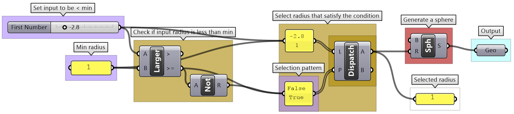 |
| Tutorial 1-7-B: Data processing | ||||||||||||
|---|---|---|---|---|---|---|---|---|---|---|---|---|
|
Given a list of numbers of some point coordinates, do the following: 1. Analyze the list to understand the data. 2. Write an algorithm to convert the list of Numbers to a list of Points. 3. Change the domain of coordinate values to be between 3 and 9. Note that the input number list is organized so that the first 3 numbers refer to the x,y,z of the first point, the second 3 numbers belong to the second point and so on. |
||||||||||||
Solution...Analyze the algorithm
|
1.8 Pitfalls of algorithmic design
Pitfalls of algorithmic design
Writing elegant algorithms that are efficient and easy to read and debug is hard. We explained in this chapter how to write algorithms with style using color-coding and labeling. We also articulated a 4-step process to help develop algorithms. Following these guides help minimize bugs and improve the readability of the scripts. We will list a few of the common issues that lead to incorrect or unintended result.
1.8.1 Invalid or wrong input type
If the input is of the wrong type or is invalid, GH changes the color of components to red or orange to indicate an error warning, with feedback about what the issue might be. This is helpful, but sometimes faulty input goes unnoticed if the components assign a default value, or calculate an alternative value to replace the input, that is not what was intended. It is a good practice to always double check the input (hook to a panel or parameter viewer and label the input). To avoid using wrong types, it is advisable to convert to the intended type to ensure accuracy.
1.8.2 Unintended input
Input is prone to unintended change via intermediate processes or when multiple users have writing access to the script. It is very useful to preview and verify all key input and output. The Panel component is very versatile and can help check all types of values. Also you can set up guarding logic against out of range values or to trap undesired values.
1.8.3 Incorrect order of operation
You should try to organize your solutions horizontally or vertically to clearly see the sequence of operations. You should also check the output from each step to make sure it is as expected before continuing on your code. There are also some techniques that help consolidate the script, for example use Expression when multiple numeric and math operations are involved. The following highlights some unfavorable organization.
The following shows how to rewrite the same code to make it less error prone.
1.8.4 Mismatched data structures
The issue of mismatched data structures as input to the same process or component is particularly tricky to guard against in GH, and has the potential to spiral the solution out of memory. It is essential to test the data structure of all input (except trivial ones) before feeding into any component. It is also important to examine desired matching under different scenarios (data matching will be explained at length later).
1.8.5 Long processing time
Some algorithms are time consuming, and you simply have to wait for it to process, but there are ways to minimize the wait when it is unnecessary. For example, at the early cycles of development, you should try to use a smaller set of data to test your solution with before committing the time to process the full set of data. It is also a good practice to break the solution into stages when possible, so you can isolate and disable the time consuming parts. Also, it is often possible to rewrite your solution to be more optimized and consume less time. Use the GH Profiler to test processing time. When a solution takes far too long to process or crashes, you should do the following: before you reopen the solution, disable it, and disconnect the input that caused the crash.
1.8.6 Poor organization
Poorly organized definitions are not easy to debug, understand, reuse or modify. We can’t stress enough the importance of writing your definitions with styles, even if it costs extra time to start with. You should always color code, label everything, give meaningful names to variables, break repeated operations into modules and preview your input and output.
1.9 Tutorials: algorithms and data
| Tutorial 1.9.1: Unioned circles | |||||||||||
|---|---|---|---|---|---|---|---|---|---|---|---|
|
Use the 4-step process to design an algorithm that combines 2 circles, given the following: Both circles are located on the XY-Plane. The first circle (Cir1) has a center (C1) = (2,2,2) and radius (R1) that is equal to a random number between 3 and 6. The second circle (Cir2) has a center (C2) that is shifted to the right of the first circle (Cir1) by an amount equal to the radius of the first circle (R1) along the positive X-Axis. The second circle radius (R2) is 20% bigger, or in other words (R2) = (R1) * 1.2. |
|||||||||||
Solution...download GH file... Analyze the question and the flow of the solution
|
| Tutorial 1.9.2: Sphere with bounds | ||||||||||
|---|---|---|---|---|---|---|---|---|---|---|
| Use the 4-step process to draw a sphere with a radius between 2 and 6. If input is less than 2, then set the radius to 2, and if input radius is greater than 6, set the radius to 6. Use a number slider to input the radius and set between 0 and 10 to test. Make sure your solution is well organized, color-coded and labeled properly. | ||||||||||
Solution...download GH file... The 4-step process to solve the algorithm
|
| Tutorial 1.9.3: Data operations | ||||||||||
|---|---|---|---|---|---|---|---|---|---|---|
|
Given the numbers embedded in the Number parameter do the following: 1. Analyze input in terms of bounds and distribution 2. View the data and how it is structured 3. Extract even numbers 4. Sort numbers descending 5. Remap sorted numbers to (100 to 200) |
||||||||||
Solution...download GH file...
|
| Tutorial 1.9.4: Algorithmic Pitfalls | ||
|---|---|---|
| Analyze what the following algorithm is intended to do, identify the errors that are preventing it from working as intended, then rewrite to fix the errors. Organize to reflect the algorithm flow, label and color-code. | ||
Solution...download GH file...
|
Next Steps
Those are the algorithms and data. Next, learn Introduction to Data Structures.
This is part 1-3 of the Essential Algorithms and Data Structures for Grasshopper.